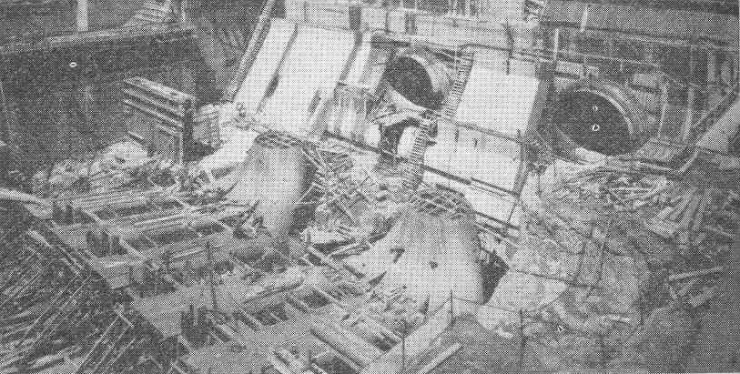
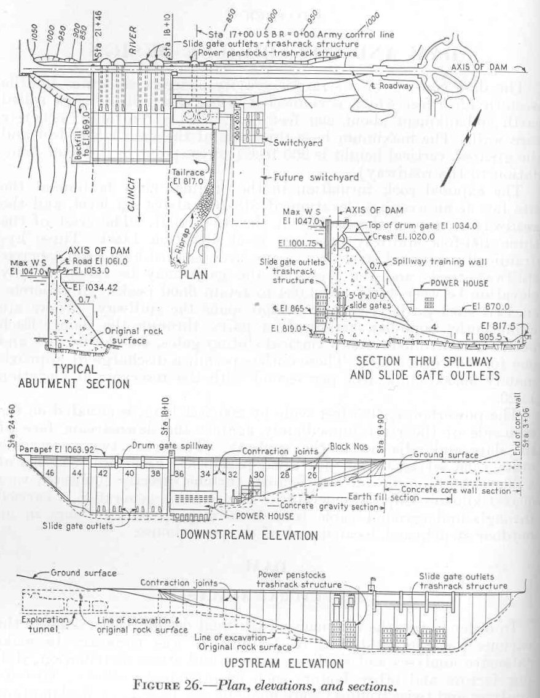

About Take-5 Cabin
Named for family, candy, and slowing down.
Take-5 Cabin is named after the family’s love of Take 5 candy and the family acronym: Tony, Amy, Kylee, Elleman.
Norris Lake, TN • Flat Hollow Marina
Norris Lake • Flat Hollow Marina • Family Trip Planner
Family command center
About Take-5 Cabin
Take-5 Cabin is named after the family’s love of Take 5 candy and the family acronym: Tony, Amy, Kylee, Elleman.
Crew
Live at the cabin area
Next few hours
Projected weather out
Lake lore + quick answers

Construction work at Norris Dam on the lower Clinch River, from public-domain TVA/NARA-era records.

Norris Lake was created by Norris Dam, TVA's first major hydroelectric project. The dam was built for flood control, electricity, navigation support, and regional development.
The dam and lake are named for U.S. Senator George W. Norris of Nebraska, a major supporter of public power and the Tennessee Valley Authority idea.
TVA lists Norris Reservoir at roughly 809 miles of shoreline and about 34,000 acres of water surface, which is why the coves can feel endless.
The reservoir follows the Clinch River and also reaches up the Powell River arm, which is the side of the lake the Flat Hollow area is tied to.
Norris was the project that introduced TVA to the country. It brought engineering, electricity, recreation, and major change to the Clinch-Powell region.
Norris is a working reservoir. TVA manages lake levels for flood storage, power generation, water flow, and recreation, so the shoreline can look different through the year.
Home base notes
Use this page as the quick family reference for marina runs, pickup plans, and what to confirm before heading down the hill.
Flat Hollow Marina & Resort is on Norris Lake in Speedwell, Tennessee. It is the marina home base for the Take-5 Cabin trip.
The marina advertises vacation rentals, watercraft rentals, boat slips, launching and docking, a marina store, and the Twisted Pickle Bar and Grille.
Confirm slip details, parking, ramp access, fuel hours, restaurant hours, rental pickup times, and any lake-level notes before the busiest lake days.
Yes. Flat Hollow promotes the Twisted Pickle Bar and Grille as its on-site restaurant, which makes it useful for boat-day lunches or easy dinners.
Flat Hollow sits on a lake created by the 1930s Norris Dam project. The marina is modern lake-trip infrastructure layered onto that older TVA reservoir story.
July 18-26
Keep it simple
Nearest grocery is about 45 minutes away
Boat • Cabin • Personal
Budget tracker